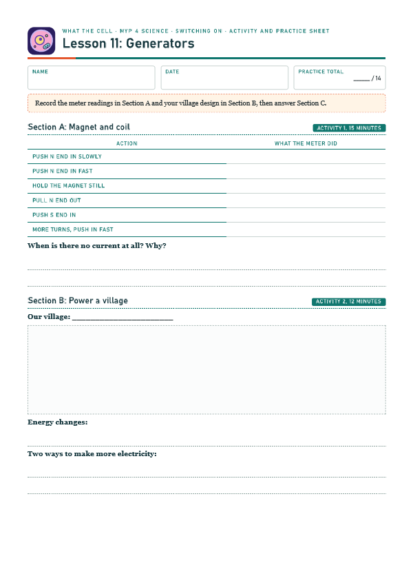

By the end of the lesson you can
- Describe how moving a magnet near a coil makes a current
- State three ways to make the induced current bigger
- Explain how a generator works
- Distinguish between AC and DC
Keys: arrows or a presentation clicker move the slides, F for full screen. Slides with a red dot have a video or simulation.
Videos (all 5 minutes or less)
- 4:59
Generator effect and electromagnetic induction
Cognito. While you watch: What is needed to induce a potential difference? Slide 13.
Simulations
- Lab
Print and practise

Activity and practice sheet
Used in the lesson’s activities, with practice questions. Your teacher has the answers.
Download (PDF)Lesson 11 slides
All 20 slides in one file, to read again or print. The video buttons on the slides open YouTube.
Download the slides (PDF)Revising? The Revision tab on the unit page has the unit notes and review.
Class activity pack
Everything to print for the lesson’s activities: picture cards, sorting mats, station cards with their kit lists, and the teacher’s set-up notes. Print it before class.
Download the activity pack (PDF)Notes: Generators
electromagnetic induction
Making a current by moving a magnet and a wire (or coil) relative to each other. For example: a magnet pushed into a coil.
generator
A machine that turns kinetic energy into electrical energy by induction. For example: in every power station.
dynamo
A small generator that gives direct current. For example: a bicycle dynamo.
alternating current (AC)
Current that keeps changing direction; mains AC changes 50 times a second in Vietnam. For example: mains electricity.
direct current (DC)
Current that flows one way only. For example: a battery.
induced current
The current made by induction. For example: the needle flicks on the meter.
electromagnetic induction
When a magnet moves near a coil of wire (or the coil moves near a magnet), a current is made in the coil.. For example: Faraday showed this in 1831.
Key words
| electromagnetic induction | making a current by moving a magnet and a coil |
|---|---|
| generator | kinetic -> electrical energy |
| dynamo | a small DC generator |
| alternating current (AC) | changes direction many times a second |
| direct current (DC) | flows one way only |
| induced current | current made by induction |